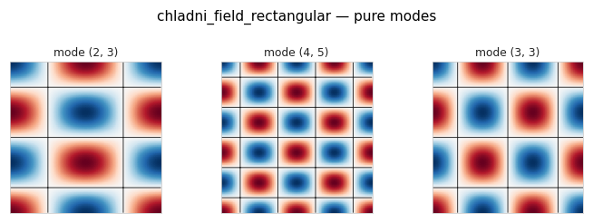
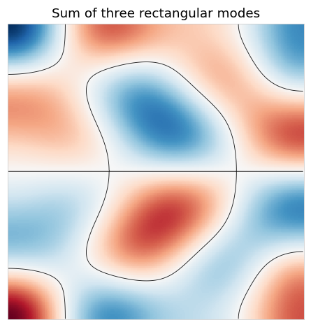
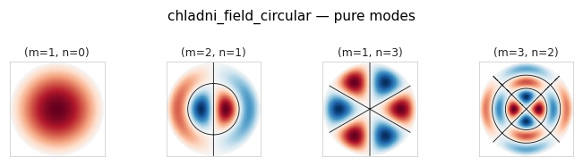
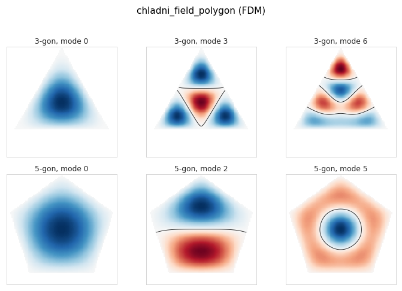
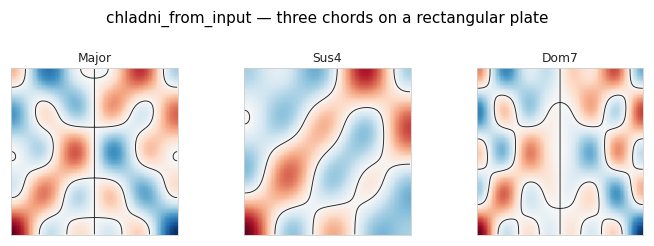
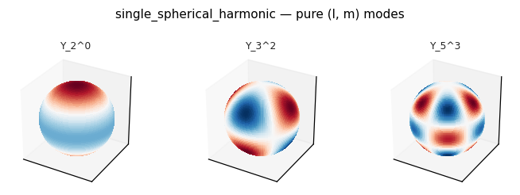
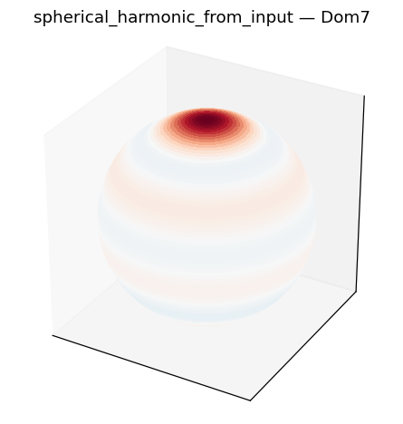

Chladni plates and spherical harmonics#
Eigenmodes of the wave equation on a bounded medium give standing-wave
patterns whose nodal lines/surfaces fall on the points where the field is
zero. harmonic_geometry exposes rectangular, circular, polygonal, and
3-D box plates, plus the spherical-harmonic basis on a sphere — the
closed-surface analogue of a Chladni plate.
This notebook reproduces the plate and sphere figures from the report.
import warnings
from fractions import Fraction
import numpy as np
import matplotlib.pyplot as plt
from biotuner.harmonic_geometry import HarmonicInput, plotting
warnings.filterwarnings("ignore")
plt.rcParams["figure.dpi"] = 110
Rectangular plate — pure modes#
from biotuner.harmonic_geometry import chladni_field_rectangular
modes = [(2, 3), (4, 5), (3, 3)]
geoms = [chladni_field_rectangular([m], resolution=257) for m in modes]
plotting.gallery(geoms, titles=[f"mode {m}" for m in modes], n_cols=3,
suptitle="chladni_field_rectangular — pure modes");

Superposition of modes#
Summing several modes with prescribed amplitudes and phases is what a real plate does under a chord-shaped excitation.
g = chladni_field_rectangular(
modes=[(2, 3), (3, 5), (4, 1)],
amps=[1.0, 0.6, 0.4],
phases=[0.0, np.pi/3, np.pi/7],
resolution=257,
)
fig, ax = plotting.plot_geometry(g)
ax.set_title("Sum of three rectangular modes");

Circular plate (Bessel modes)#
from biotuner.harmonic_geometry import chladni_field_circular
cases = [([1], [0], "(m=1, n=0)"),
([2], [1], "(m=2, n=1)"),
([1], [3], "(m=1, n=3)"),
([3], [2], "(m=3, n=2)")]
geoms = [chladni_field_circular(mr, ma, R=1.0, resolution=257) for mr, ma, _ in cases]
titles = [lab for _, _, lab in cases]
plotting.gallery(geoms, titles=titles, n_cols=4,
suptitle="chladni_field_circular — pure modes");

Polygonal plate (finite-difference)#
For arbitrary convex polygons the eigenproblem is solved on a finite difference mesh.
from biotuner.harmonic_geometry import chladni_field_polygon
cases = [(3, 0), (3, 3), (3, 6), (5, 0), (5, 2), (5, 5)]
geoms = [chladni_field_polygon([m], n_sides=ns, resolution=96)
for ns, m in cases]
titles = [f"{ns}-gon, mode {m}" for ns, m in cases]
plotting.gallery(geoms, titles=titles, n_cols=3,
draw_kwargs={"show_nodal": True},
suptitle="chladni_field_polygon (FDM)");

From a chord input — chladni_from_input#
chladni_from_input ties a HarmonicInput chord to a plate: each ratio
is mapped to a 2-D or 3-D mode index, the modes are summed, and the result
is returned as a field_2d/field_3d GeometryData.
from biotuner.harmonic_geometry import chladni_from_input
chords = {
"Major": HarmonicInput(ratios=[Fraction(1), Fraction(5, 4), Fraction(3, 2)]),
"Sus4": HarmonicInput(ratios=[Fraction(1), Fraction(4, 3), Fraction(3, 2)]),
"Dom7": HarmonicInput(ratios=[Fraction(1), Fraction(5, 4), Fraction(3, 2),
Fraction(7, 4)]),
}
geoms = [chladni_from_input(c, plate="rectangular",
plate_kwargs={"resolution": 129})
for c in chords.values()]
plotting.gallery(geoms, titles=list(chords.keys()), n_cols=3,
suptitle="chladni_from_input — three chords on a rectangular plate");

Spherical harmonics — closed-surface eigenmodes#
single_spherical_harmonic and spherical_harmonic_field produce the
(l, m) eigenmodes of the Laplacian on the unit sphere. The plot below
shows three pure modes rendered as colour on the sphere surface.
from biotuner.harmonic_geometry import single_spherical_harmonic
cases = [(2, 0), (3, 2), (5, 3)]
geoms = [single_spherical_harmonic(l, m, n_theta=80, n_phi=160)
for l, m in cases]
titles = [f"Y_{l}^{m}" for l, m in cases]
plotting.gallery(geoms, titles=titles, n_cols=3,
suptitle="single_spherical_harmonic — pure (l, m) modes");

Chord on a sphere#
from biotuner.harmonic_geometry import spherical_harmonic_from_input
dom7 = HarmonicInput(ratios=[Fraction(1), Fraction(5, 4),
Fraction(3, 2), Fraction(7, 4)])
g = spherical_harmonic_from_input(dom7, n_theta=96, n_phi=192)
fig, ax = plotting.plot_geometry(g)
ax.set_title("spherical_harmonic_from_input — Dom7");
